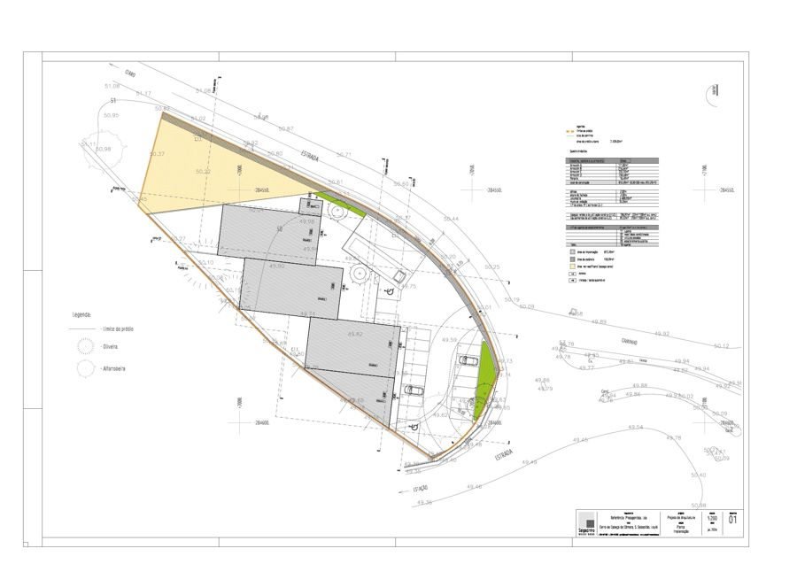
| peça | escala | des. |
|---|---|---|
| Planta de implantação | 1:200 | 01 |
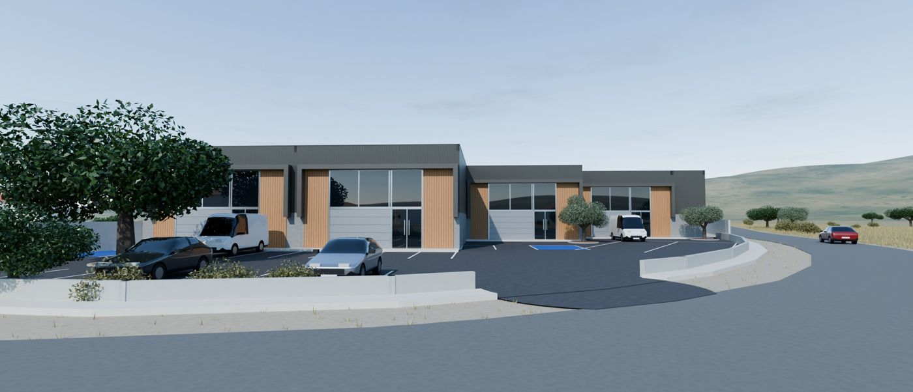
Armazéns · Estrada da Estação, Loulé
Quatro armazéns e portaria junto à linha do Algarve, na Estrada da Estação, em Loulé. Volumes de um piso em chapa ondulada cinza, com frentes de painel Viroc e ripado de madeira voltadas para o estacionamento.
Explorar o modelo 3D| projeto | folha | |
|---|---|---|
| Cais da Estação · Armazéns | 00 | |
| local | data | |
| Cerro de Cabeça de Câmara, S. Sebastião, Loulé | jul. 2026 | |
| programa | a. constr. | pisos |
| 4 armazéns + portaria | 812,70 m² | 1 |
Rode, aproxime e desloque. No telemóvel: um dedo roda, dois dedos aproximam e deslocam.
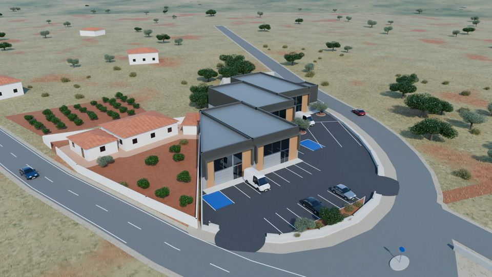
Sol de sudeste, manhã · unidades em metros
Visualizações do conjunto. Toque numa imagem para ampliar.
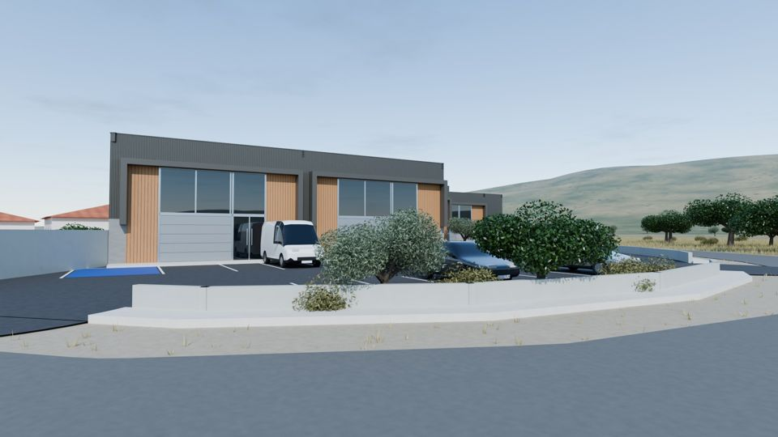
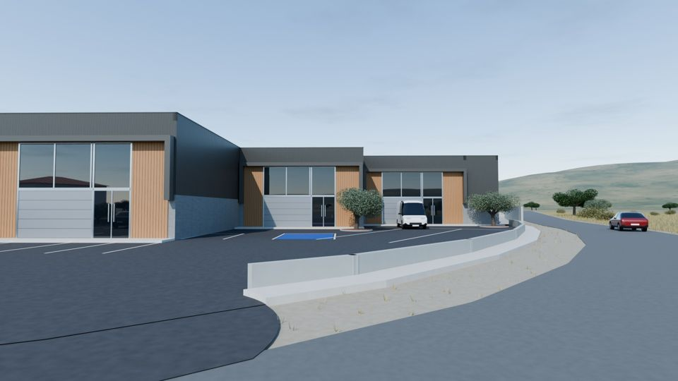
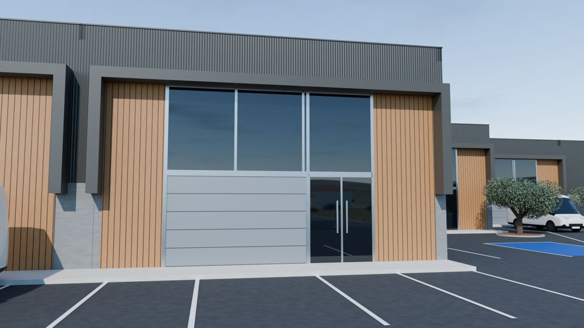
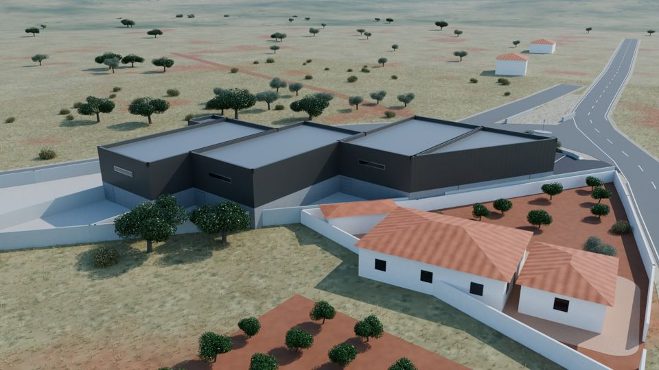
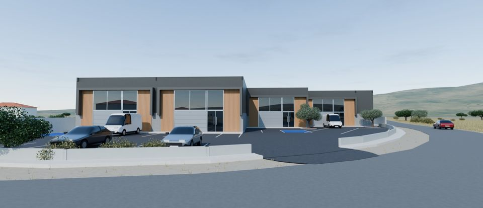
As imagens são uma visualização, não um documento do projeto: muro baixo junto à rua, entradas, moradia vizinha e viaturas são aproximações.
Projeto de arquitetura submetido à Câmara Municipal de Loulé. Abra uma folha para ampliar: roda do rato ou dois dedos para zoom, arrastar para deslocar.

| peça | escala | des. |
|---|---|---|
| Planta de implantação | 1:200 | 01 |
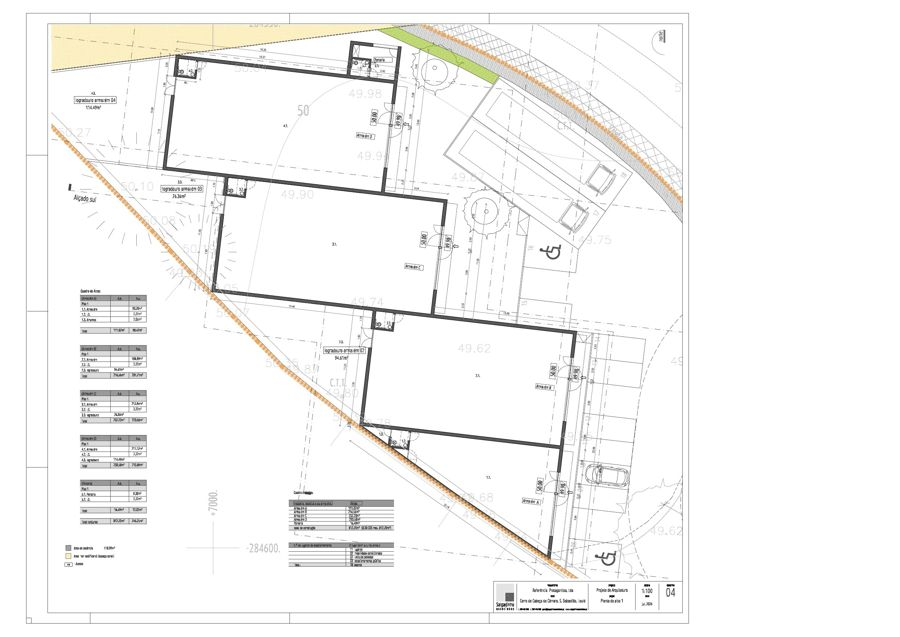
| peça | escala | des. |
|---|---|---|
| Planta do piso 1 · quadro de áreas | 1:100 | 04 |
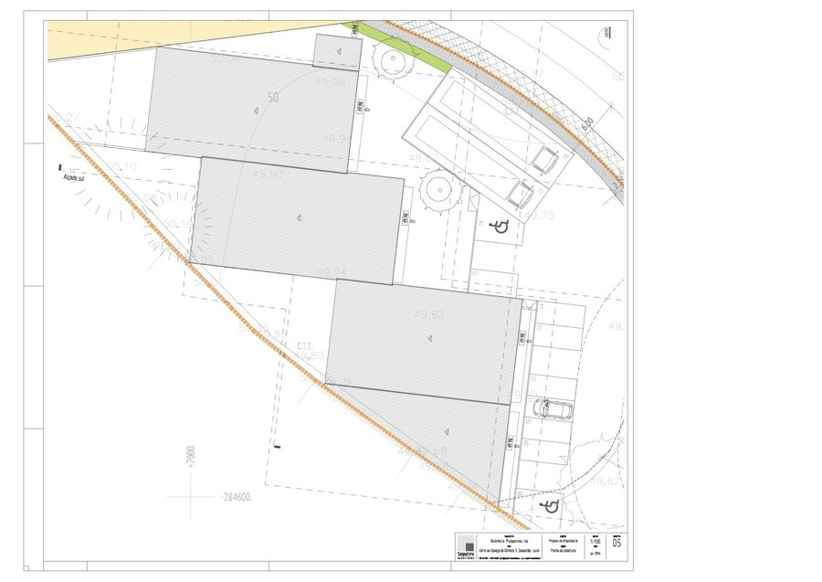
| peça | escala | des. |
|---|---|---|
| Planta de cobertura | 1:100 | 05 |
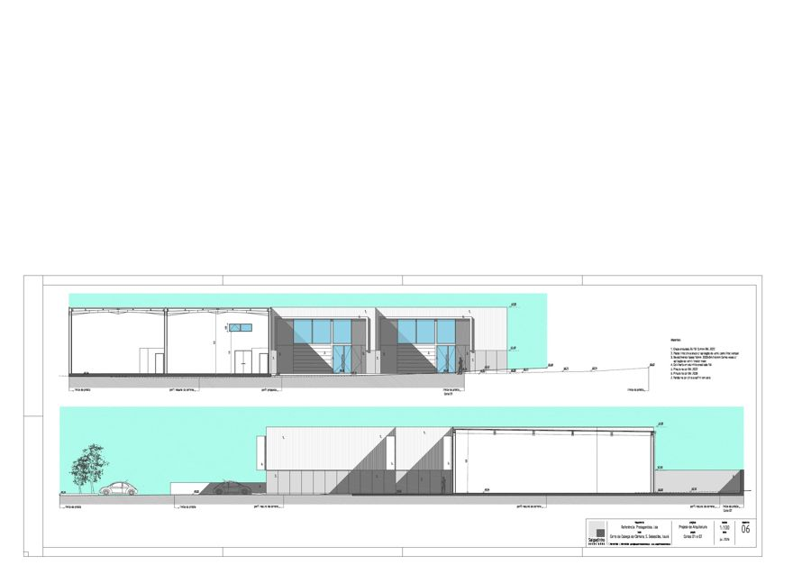
| peça | escala | des. |
|---|---|---|
| Cortes 01 e 02 | 1:100 | 06 |
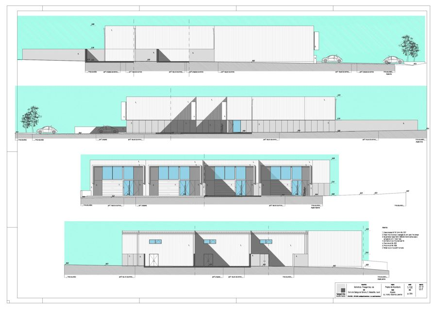
| peça | escala | des. |
|---|---|---|
| Alçados · legenda de materiais | 1:100 | 07 |
Valores do quadro sinóptico e do quadro de áreas das peças desenhadas.
| Unidade | A. bruta | A. útil | Logradouro |
|---|---|---|---|
| Armazém A | 111,87 m² | 98,47 m² | — |
| Armazém B | 216,56 m² | 201,71 m² | 94,61 m² |
| Armazém C | 237,20 m² | 220,66 m² | 76,36 m² |
| Armazém D | 230,58 m² | 213,89 m² | 114,49 m² |
| Portaria | 16,49 m² | 12,02 m² | — |
| Total | 812,70 m² | 746,75 m² |